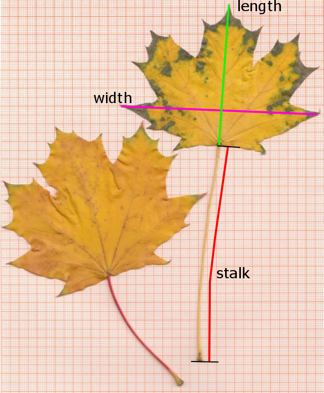

Show code
# ... do itThe example aims to demonstrate estimation and interpretation of prediction intervals and confidence intervals. At the end, the two samples are compared with respect to variance and mean values.
The experimental hypotheses is, that the sampling strategy has an influence on the parameters of the distribution, i.e. that a sampling bias may occur. Here we leave it open, if the “subjective sampling” strategy prefers bigger or smaller leaves or if it has an influence on variance. The result is to be visualized with bar charts and box plots. We use the leave width as an example, an analysis of the other variables is left as an optional exercise.
We can now derive the following statistical hypotheses about the variance:
and about the mean:
The data set consists of two samples of maple leaves (Acer platanoides), sampled in front of the institute building (Fig. 1).
The two samples were collected with different sampling strategies:
Then length, width and stalk length were measured in millimeters with a ruler (Fig. 2) and the data collected in a spreadsheet table and a csv-file.

The statistical analysis is performed with the R software for statistical computing and graphics (R Core Team, 2024).
The data set is available from your local learning management system (LMS, e.g. OPAL at TU Dresden) or publicly from https://tpetzoldt.github.io/datasets/data/leaves.csv.
leaves.csv and use one of RStudio’s “Import Dataset” wizards.read.csv().# ... do itplot(leaves)leaves in two separate tables for the samples HSE and MHYB:# use `hist`, `qqnorm`, `qqline`
# ...In a first analysis, we want to estimate the interval that covers 95% of leaves, defined by their width. As a first method, we take the empirical quantiles directly from the data. The method is also called “nonparametric,” because we don’t calculate mean and standard deviation and do not assume a normal or any other distribution.
Now, we compare this empirical result with a method that relies on a specific distribution. If our initial graphical visualization (e.g., the histogram) suggests the data is reasonably symmetric and bell-shaped, we can proceed with a parametric assumption.
We first calculate mean, sd, N and se for “hse” data set:
Then we estimate an approximate two-sided 95% prediction interval (\(PI\)) for the sample using a simplified approach based on the quantiles of the theoretical normal distribution (\(z_{\alpha/2} \approx 1.96\)) and the sample parameters mean \(\bar{x}\) and standard deviation (\(s\)):
\[ PI = \bar{x} \pm z \cdot s \]
This is the interval where we would predict a new single observation to fall with 95% confidence.
hse.95 <- hse.mean + c(-1.96, 1.96) * hse.sd
hse.95Instead of using 1.96, we could also use the quantile function qnorm(0.975) for the upper interval or qnorm(c(0.025, 0.975)) for the lower and upper in parallel:
Now we plot the data and indicate the 95% interval:
… and the same as histogram:
The confidence interval (\(CI\)) of the mean tells us how precise a mean value was estimated from data. If the sample size is “large enough”, the distribution of the raw data does not necessarily need to be normal, because then mean values tend to approximate a normal distribution due to the central limit theorem.
The formula for the CI of the mean is: \[CI = \bar{x} \pm t_{\alpha/2, n-1} \cdot \frac{s}{\sqrt{N}}\]
Task: Calculate the confidence interval of the mean value of the “hse” data set using the quantile function (qt) of the t-distribution1:
Now indicate the confidence interval of the mean in the histogram.
abline(v = hse.ci, col="magenta")# Do the same for the "hyb" data, calculate mean, sd, N, se and ci.
# ...Explain the fundamental statistical reason why the 95% Prediction Interval (PI) for the leaf width is always significantly wider than the 95% Confidence Interval (CI) for the mean leaf width, even though both intervals are calculated from the same data set (hse).
To compare the two samples. we already created box plots at the beginning. Instead of a boxplot, we can also use a bar chart with confidence intervals.
This can be done with the add-on package gplots (not to be confused with ggplot):
Solution A) with package gplots
Solution B) without add-on packages (optional)
Here we use a standard bar chart, and line segments for the error bars. One small problem arises, because barplot creates an own x-scaling. The good news is, that barplot returns its x-scale. We can store it in a variable, e.g. x that can then be used in subsequent code.
In the following, we compare the two samples with t- and F-Tests.
Hypotheses:
\(H_0\): Both samples have the same mean width and variance.
\(H_A\): The mean width (and possibly also the variance) differ because of more subjective sampling of HSE students. They may have prefered bigger or the nice small leaves.
t.test(width ~ group, data = leaves)Perform also the classical t-test (var.equal=TRUE) and the F-test (var.test). Calculate absolute and relative effect size (mean differences) and interpret the results of all 3 tests.
# var.test(...)
# t.test(...)
# ...The following is optional for all who feel underchallenged or just want to learn more.
The simplified \(\bar{x} \pm z \cdot s\) formula used above is an approximation. A statistically rigorous 95% prediction interval, especially for smaller samples, needs two corrections.
First, we would use the t-distribution with the quantile \(t_{\alpha/2, n-1}\) (or qt(alpha/2, n-1) in R) instead of the normal quantiles (\(\pm 1.96\)). Then we add a term \(\sqrt{1+1/N}\) that corrects for the sample parameters. The full formula for a single future observation is then:
\[\text{PI} = \bar{x} \pm t_{\alpha/2, n-1} \cdot s \cdot \sqrt{1 + \frac{1}{N}}\]
The prediction interval is related to the so-called “tolerance interval”. Both are the same if the population parameters \(\mu, \sigma\) are known or the sample size is very big. However, there are theoretical and practical differences in case of small sample size.
as the sample size is not too small, you may also compare this with 1.96 or 2.0↩︎